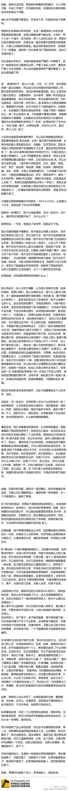

前段@不加V 有篇类似的文章。这类问题读起来向来很沉重，所以也很烦有人贱嗖嗖地问：“如果是你，会如何做？”，我是不太相信人性的。@北京大土豆:知乎上的一个问答，献给道德帝们。有个妹子说相恋了4年的男友去年大学刚毕业就查出癌症，妹子陪伴男友一直化疗，男友想15年结婚，问大家怎么办？妹子觉得不妥：1，怕化疗后会复发 2，父母不同意 3，没经济能力。有个妹子以亲身经历给出了答案：别被道德绑架，请自私些。癌症男友和我该何去何从？ - 知乎 
自己的事情和别人的事情: 观念中，只对自己的事情负责，平常不太愿意插手别人的事情。所以，因为认为孩子教育和家务主要是明俊的事情，我之前的态度基本是不管。他吼姣姣我觉得姣姣该受着，屋里一个月不除尘我也能呆。
但现在统统变成我的事情后，立马勤快起来。家务活儿先不说了，对姣姣除了用自己的方式多鼓励她外，给她读英文课外读物也比以往耐心许多。—— 啥时候都得把这个"自己的事情"装到脑子里，当然最好是装到别人的脑子里。:—)@Ada李力:自己的事情和别人的事情: 观念中，只对自己的事情负责，平常不太愿意插手别人的事情。所以，因为认为孩子教育和家务主要是明俊的事情，我之前的态度基本是不管。他吼姣姣我觉得姣姣该受着，屋里一个月不除尘我也能呆。
 癌症男友和我该何去何从？ - 知乎
癌症男友和我该何去何从？ - 知乎